Daily example
Daily example
Weekly example
Monthly example
Quarterly example
Yearly example
All example
Back to main page
[Cache Hit Ratio]
[Sorts in Memory]
[Shared Pool]
[Library Cache Hits]
[Wait Percentages]
[Non-Parse CPU]
[Parsing]
[Latches]
[Rollback Segment Contention]
[Total Transactions over period]
[Total Sessions over period]
[Transactions per Second]
[Average Open Cursors]
[Rollbacks and Commits]
[Redo Size]
[Logical Reads]
[Block Changes]
[Physical Reads]
[Physical Writes]
[User Calls]
[Parse Count]
[Hard Parse Count]
[Sort Count]
[Logons Count]
[Executes]
[Database Size]
[Max & Mean Tablespace Percent Full]
Daily example Cache Hit Ratio
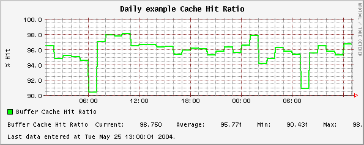
Daily example Sorts in Memory
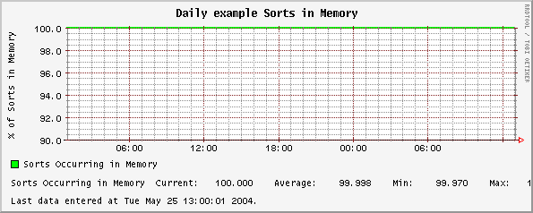
Daily example Shared Pool
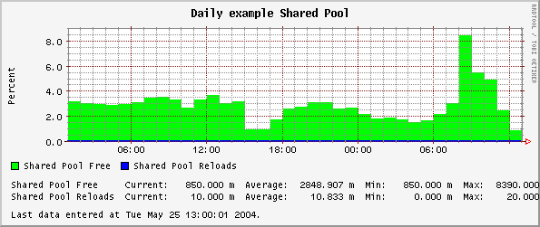
Daily example Library Cache Hits
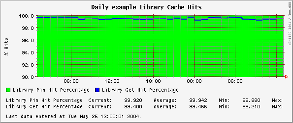
Daily example Wait Percentages
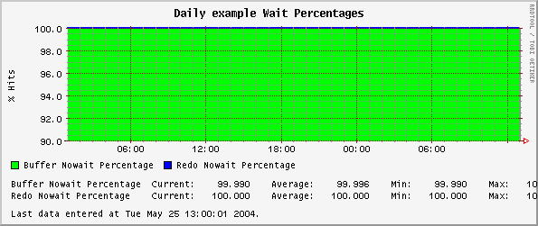
Daily example Non-Parse CPU
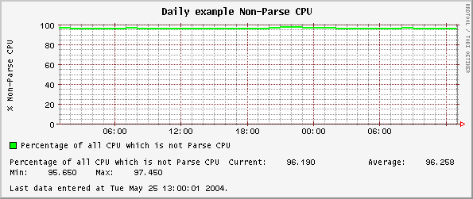
Daily example Parsing
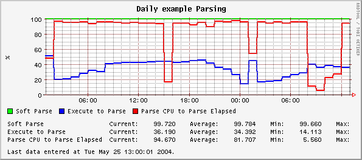
Daily example Latches
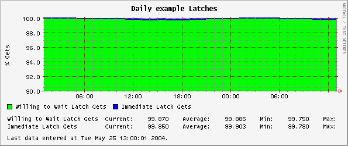
Daily example Rollback Segment Contention
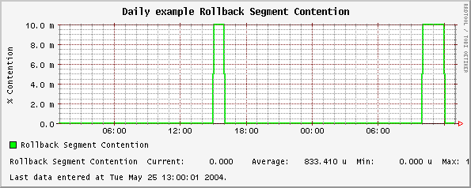
Daily example Total Transactions over period
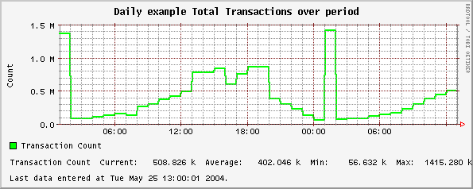
Daily example Total Sessions over period
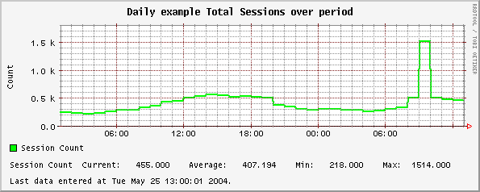
Daily example Transactions per Second
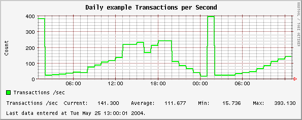
Daily example Average Open Cursors
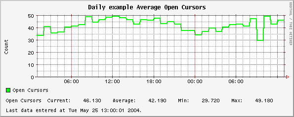
Daily example Rollbacks and Commits
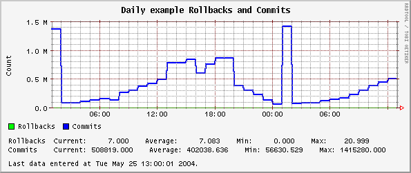
Daily example Redo Size
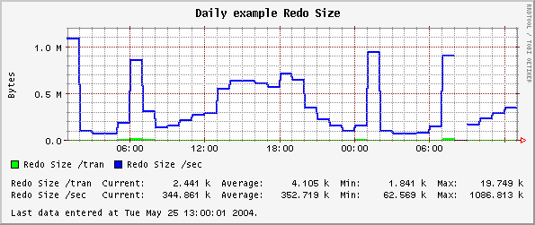
Daily example Logical Reads
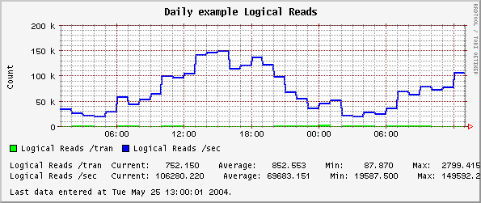
Daily example Block Changes
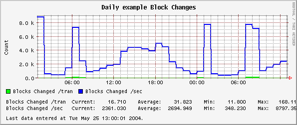
Daily example Physical Reads
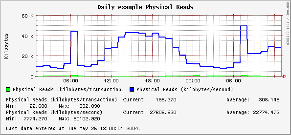
Daily example Physical Writes
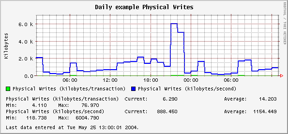
Daily example User Calls
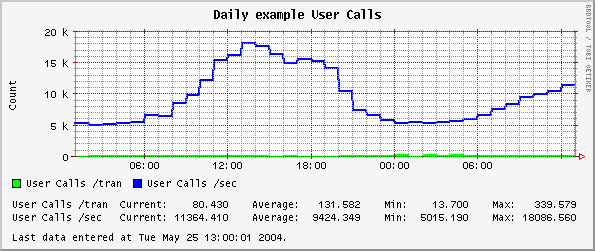
Daily example Parse Count
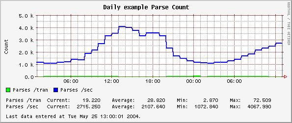
Daily example Hard Parse Count
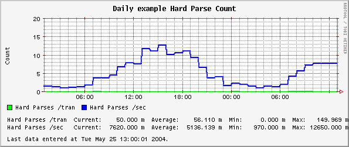
Daily example Sort Count
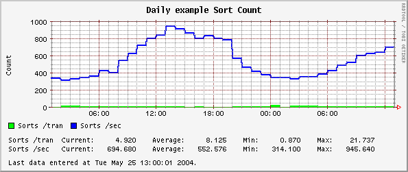
Daily example Logons Count
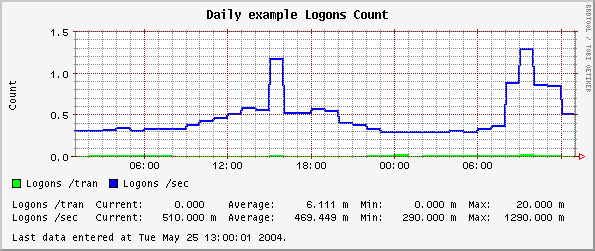
Daily example Executes
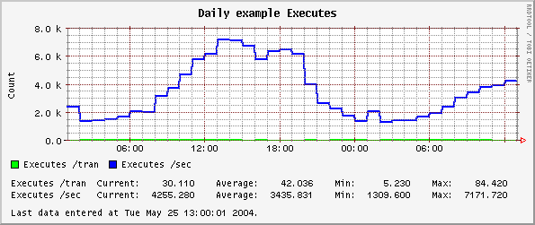
Daily example Database Size
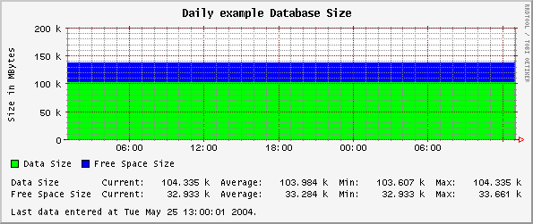
Daily example Max & Mean Tablespace Percent Full
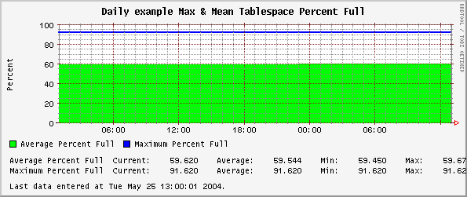
These plots brought to you by your local system administrator.
Orca
0.27 by
Blair Zajac
blair@orcaware.com
Funding for Orca provided by renowned fashion
image consultant
,
Ashley Rothschild
.
Graphs made available by RRDtool.